ВКЛАДКИ DevTools
Elements
С помощью вкладки Elements можно отслеживать элементы и их свойства на странице, можно редактировать стили и проверять вёрстку на переполнение. Здесь отображается весь HTML- (слева) и CSS-код (справа) открытой страницы.
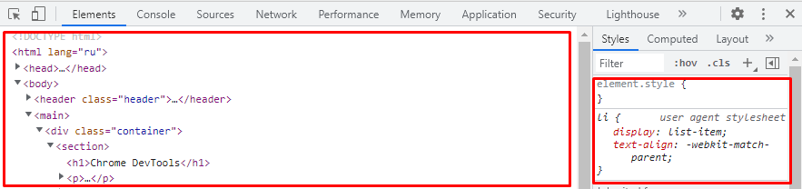
Как получить информацию об элементе
Есть три способа получить информацию о любом элементе на странице:
- Через инспектор
- Поиск по элементам
- Визуальный поиск
Через инспектор
Способ удобен, если вы точно видите элемент и можете кликнуть по нему правой кнопкой мыши. Выберите Inspect или «Посмотреть код». Заодно сразу откроется панель разработчика. Нужный элемент будет подсвечен серой полосой.
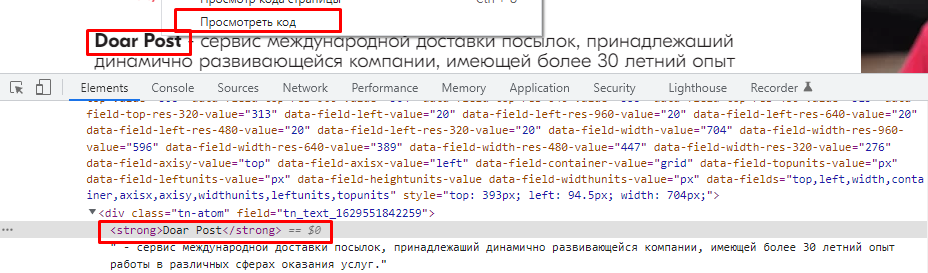
Поиск по элементам
При открытом отладчике нажимаем Ctrl+F, и внизу появится окно поиска по тегу, атрибуту, классу или текстовому содержимому элемента.
Введём, например, часть текста, и увидим нужный элемент в коде:
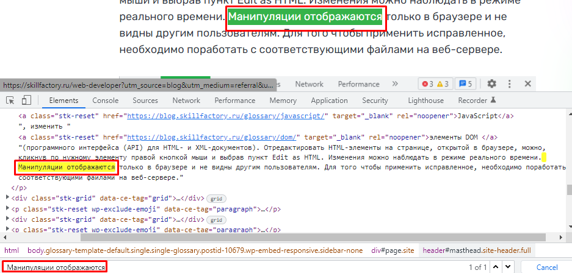
Визуальный поиск
При открытом отладчике открываем режим визуального поиска (нажимаем квадратик со стрелкой в левом верхнем углу консоли). Затем находим нужный элемент и кликаем по нему - сразу подтягивается код с нужным элементом.

Как внести изменения в элемент на странице
Если вы хотите отредактировать атрибут, класс или текст элемента, сделайте двойной щелчок в нужной точке и вносите изменения. Чтобы переместиться вперёд, нажмите Tab, назад — Shift+Tab, а чтобы скрыть элемент, нажмите H. После внесения измененений сделайте один щелчок левой кнопкой мыши, чтобы внесенные изменения отобразились.
Следует иметь ввиду, что внесенные изменения не затрагивают исходный код - он остается в изначальном состоянии и при перезагрузке страницы он отображается в первоначальном состоянии. Данный способ дает возможность визуализировать возможные корректировки перед внесением их в исходный код.
Как изменить разметку страницы
Отредактировать HTML-элементы на странице, открытой в браузере, можно также, кликнув в коде по нужному элементу правой кнопкой мыши и выбрав пункт Edit as HTML. Изменения можно наблюдать в режиме реального времени. Манипуляции отображаются только в браузере и не видны другим пользователям. Для того чтобы применить исправленное, необходимо поработать с соответствующими исходными файлами.
Проверка вёрстки на переполнение
Мы верстали, редактировали, а как проверить, что вёрстка не развалится, если количество элементов изменится? Сделаем тесты на переполнение.
Проверка на переполнение текстом.
Есть два способа:
- Находим элемент, делаем двойной клик и добавляем текст. Проще всего скопировать содержимое и вставить его несколько раз. 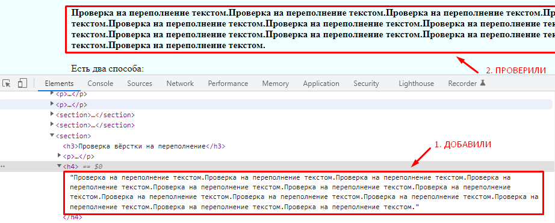
-
Открываем вкладку Console, вставляем команду
document.body.contentEditable = trueнажимаем Enter. Теперь можно редактировать любой текстовый элемент на странице напрямую. Естественно, исправленный текст останется до перезагрузки страницы и никак не повлияет на сайт.
На что обращать внимание? При добавлении текста элементы должны растягиваться по вертикали, текст не должен вылезать за поля элемента, выпадать или обрезаться.
Переполнение потоковыми блоками.
Находим родителя, в котором лежат нужные элементы и редактируем разметку, добавляем несколько блоков, применяем изменения и смотрим результат.
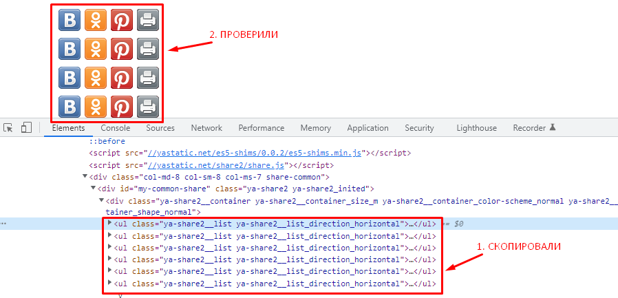
Сетка при переполнении не должна ломаться, а логика потока должна сохраняться.
Просмотр и тестовое редактирование стилей
Информация о стилях находится на вкладке Styles. Слева выводятся стили, указанные разработчиком, а справа от каждого стиля — файл и строка, где они прописаны. Блок с метриками (на скриншоте) на самом деле находится в самом низу — нужно проскроллить список до конца.
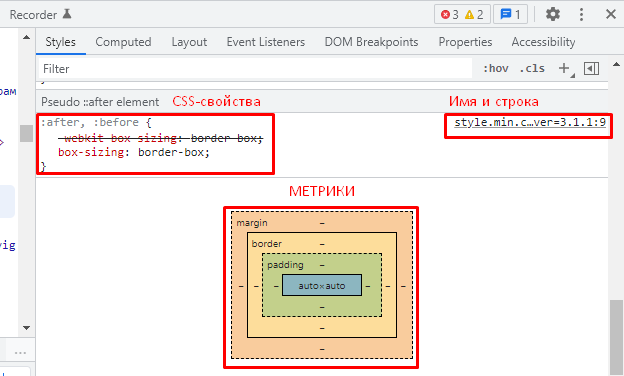
Меняем стили прямо в браузере
Любое правило можно отредактировать, а размеры элементов менять прямо в блоке с метрикой. Например, переопределим значение размера шрифта, и результат сразу появится на экране.
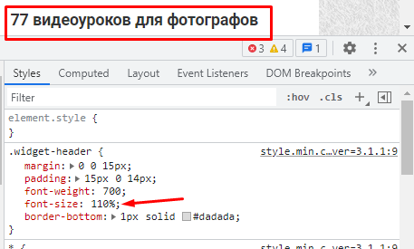 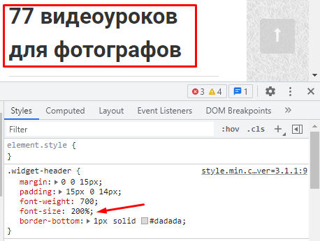
Напишем правило с ошибкой. Правило не применится, потому что его не существует. Оно зачёркнуто, а слева появляется иконка с предупреждением.
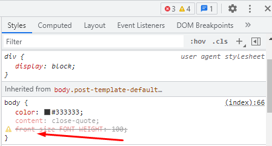
А ещё мы можем разворачивать сокращённое правило, кликнув на стрелку. Например, так можно развернуть правило для border-style.
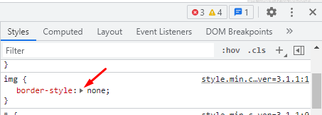 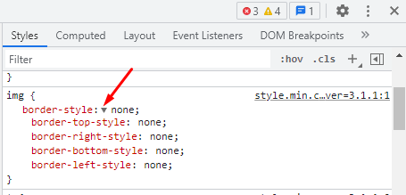
Слева у всех элементов есть чекбокс для включения и выключения стилей.
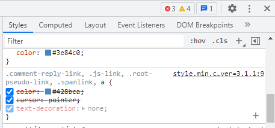
Данные о цвете
У элементов со свойством color легко меняется цвет — для этого нужно воспользоваться пипеткой. Можно выбрать любой цвет из интерфейса или указать цвет в RGBA или HSL.
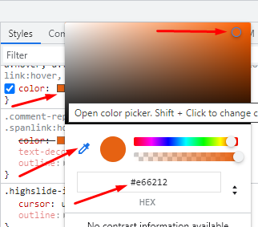
Console
Консоль позволяет смотреть вывод JavaScript, а также исполнять свой код для тестирования и отладки страницы. Если на открытой странице не подгрузились какие-либо данные, например стили, шрифты или картинки, здесь отобразятся соответствующие ошибки с подробным описанием. Также в консоль можно ввести команду на языке JavaScript, и она выполнится.
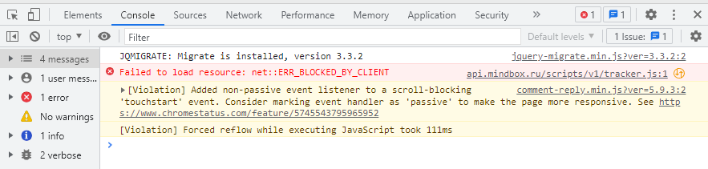
Sources
Вкладка отображает загруженные файлы из всех источников, к которым обращался сайт. В большей степени она используется при отладке кода, позволяет увидеть все файлы и просмотреть их содержимое. Sources можно использовать в качестве полноценного редактора кода, получив доступ к локальным файлам через Workspaces (Рабочие пространства).
Например, так выглядит CSS-файл на вкладке Sources
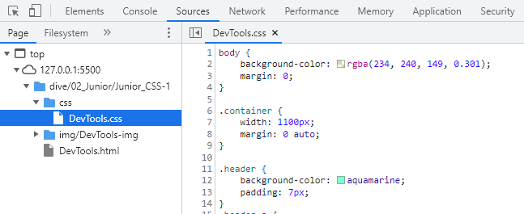
Network
На вкладке отображаются сетевые запросы, который делает сайт: сколько времени заняла загрузка страницы, какие ресурсы подключились или не подключились к странице, и многое другое.
Как правило, ее используют при оптимизации скорости загрузки страницы, а также для мониторинга выполняемых запросов. Запросы к данным представлены в виде таблицы. Сверху расположены инструменты: очистка таблицы, включение и отключение записи запросов и другие.
Обычно вкладку Network используют, чтобы узнать состояние ресурса, который не отображается на странице, но был к ней подключен. Смотрим в таблицу — если есть какая-то ошибка, ресурс будет гореть красным. Если ошибок нет, то статус каждого запроса — 200. Это значит, что всё хорошо. (Но если на сайте будет ошибка, сообщение о ней отобразится и на вкладке Console. )
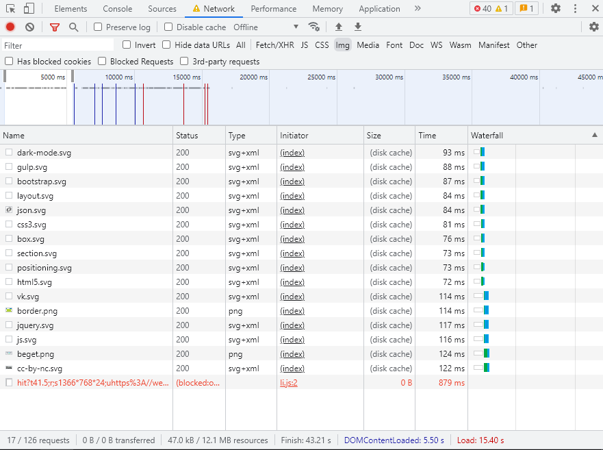
Под таблицей можно увидеть количество запросов, общее время загрузки всех данных, время загрузки DOM и ресурсов, участвующих в отображении текущей страницы.
Performances
Вкладка отображает нагрузку, которую создает сайт на компьютер пользователя. Здесь можно увидеть показатели FPS, загрузки CPU и сетевые запросы, необходимые данные и инструменты для повышения производительности страницы. На панели есть таймлайн использования сети, выполнения JavaScript и загрузки памяти. После первого построения таймлайнов можно найти данные о всем жизненном цикле страницы и выполнении кода.
Также можно посмотреть время исполнения отдельных частей кода и выбрать конкретный период на шкале, чтобы увидеть, какие процессы происходили в этот интервал. Все это позволяет проанализировать каждое событие, которое происходило в момент загрузки или во время взаимодействия с пользователем.
Memory
Здесь расположено несколько инструментов, которые помогают отслеживать, какую нагрузку на систему оказывает выполнение кода:
-
Heap Snapshot.
- С помощью него можно посмотреть, как распределяется память между объектами JavaScript и связанными с ними элементами DOM.
-
Allocation instrumentation on timeline.
- Этот инструмент используется для устранения утечек памяти. Он показывает, как распределяется память между переменными в коде.
-
Allocation sampling.
- Профайлер записывает, как распределяется память на отдельные функции JavaScript.
Application
Панель, где можно быстро очистить хранилище и кэш, а также управлять базами данных.
Security
Отвечает за надежность ресурса. Здесь можно получить информацию о данных протокола и сертификата безопасности, если они есть. Также, если источник небезопасный, узнать, какие именно запросы не защищены. Поэтому этот инструмент, как правило, используется для решения проблем со смешанным контентом и другими подобными задачами.
Lighthouse
На этой вкладке можно проверить производительность сайта.
-
Performance.
- Позволяет узнать скорость загрузки сайта. Итоговый показатель зависит от времени загрузки интерактивных элементов, шрифтов и прочего контента, а также от времени блокировки и отрисовки стилей.
-
Progressive Web App.
- Позволяет проверить, регистрирует ли сайт Service Workers, возможна ли работа сайта офлайн, а также возвращает ошибку 200.
-
Best Practices.
- Помогает проверить безопасность сайта и узнать, применяются ли современные стандарты веб-разработки. На показатель влияет использование устаревших API, HTTPS, корректность кодировки и многое другое.
-
Accessibility.
- Позволяет узнать, насколько удобен сайт, как воспринимается контент и можно ли управлять интерфейсом и передвигаться по сайту без мыши
-
SEO.
- Позволяет понять, насколько соблюдаются рекомендации Google по оптимизации сайта. На показатель влияют использование метатегов, наличие alt у изображений, адаптивная верстка и пр.
Coverage
Поиск и исправление «мертвого» кода.
Иногда в файлах CSS и JavaScript содержится много кода, который присутствует, но нигде не используется. Его наличие напрямую влияет на производительность сайта. В Chrome DevTools для этого предусмотрен инструмент Coverage.
На панели со всеми основными вкладками (Elements, Console и т.д.) с правой стороны есть три точки. Необходимо кликнуть по ним и выбрать More Tools, где расположен Coverage. Внизу появится новая вкладка, где представлены данные о неиспользуемых CSS и JavaScript в процентном выражении.
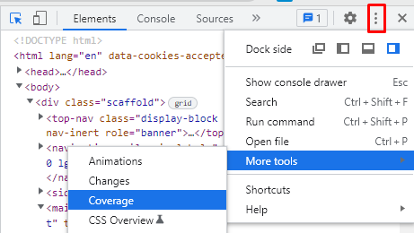
Если кликнуть по одному из них, можно увидеть все строки кода с цветовым обозначением: красные — используемые, синие — неиспользуемые. Чтобы повысить производительность сайта, нужно убрать неиспользуемый код.
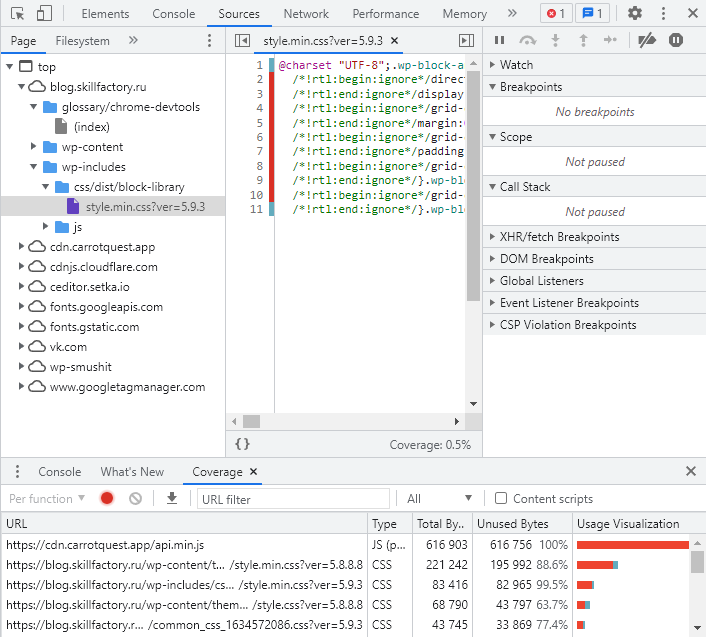
Структурирование кода.
Код, в котором отсутствуют «мертвые» элементы, улучшает производительность сайта, но сложен для восприятия (иногда бывают удалены даже пробелы и переносы строк). Chrome DevTools позволяет его структурировать. На вкладке Elements необходимо выбрать любой минифицированный ресурс (CSS, JS или HTML), после чего в новой вкладке отобразится содержимое, а снизу появится иконка с изображением фигурных скобок. Нажав на них, Chrome DevTools структурирует код, который подходит для внесения каких-либо изменений.